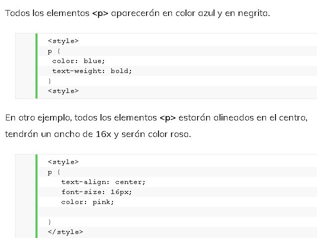

CSS (en inglés Cascading Style Sheets) es lo que se denomina lenguaje de hojas de estilo en cascada y se usa para estilizar elementos escritos en un lenguaje de marcado como HTML. CSS separa el contenido de la representación visual del sitio. CSS fue desarrollado por W3C (World Wide Web Consortium) en 1996 por una razón muy sencilla. HTML no fue diseñado para tener etiquetas que ayuden a formatear la página. Está hecho solo para escribir el marcado para el sitio. Se incluyeron etiquetas como font en HTML versión 3.2, y esto les causó muchos problemas a los desarrolladores. Dado que los sitios web tenían diferentes fuentes, fondos de colores y estilos, el proceso de reescribir el código fue largo, doloroso y costoso. Por lo tanto, CSS fue creado por W3C para resolver este problema. La relación entre HTML y CSS es muy fuerte. Dado que HTML es un lenguaje de marcado (es decir, constituye la base de un sitio) y CSS enfatiza el estilo (toda la parte estética de un sitio web), van de la mano. CSS no es técnicamente una necesidad, pero no querrás tener un sitio que solo tenga HTML, ya que se vería completamente desnudo. Ventajas de CSS.
La diferencia entre un sitio web que implementa CSS y uno que no, es enorme y definitivamente se nota. Quizás hayas visto algún sitio web que no se puede cargar por completo y tiene un fondo blanco con la mayor parte del texto en azul y negro. Eso significa que la parte CSS del sitio no se cargó correctamente o no existe. Así es como se ve un sitio con solo HTML, y creo que estarás de acuerdo conmigo en que no luce muy bien. Antes de CSS, todo el estilo debía incluirse en el marcado HTML. Esto significa que había que describir por separado todos los fondos, los colores de fuente, las alineaciones, etc. CSS permite estilizar todo en un archivo diferente, creando el estilo allí y después integrando el archivo CSS sobre el marcado HTML. Esto hace que el marcado HTML sea mucho más limpio y fácil de mantener. En resumen, con CSS no tienes que describir repetidamente cómo se ven los elementos individuales. Esto ahorra tiempo, hace el código más corto y menos propenso a errores. CSS te permite tener múltiples estilos en una página HTML, y esto hace que las posibilidades de personalización sean casi infinitas. Hoy en día, esto se está volviendo una necesidad más que algo básico.
CSS utiliza una sintaxis simple basada en el inglés con un conjunto de reglas que la gobiernan. Como mencionamos anteriormente, HTML no fue hecho con la intención de utilizar elementos de estilo, sino solo para el marcado de la página. Fue creado simplemente para describir el contenido. Por ejemplo:
Esto es un párrafo.
. Pero, ¿cómo le aplicas un estilo al párrafo? La estructura de sintaxis CSS es bastante simple. Cuenta con un selector y un bloque de declaración. Primero seleccionas un elemento y luego declaras lo que quieres hacer con él. Bastante sencillo, ¿verdad? Sin embargo, hay reglas que debes recordar. Las reglas de la estructura son bastante simples, así que no te preocupes. El selector apunta al elemento HTML que deseas estilizar. El bloque de declaración contiene una o más declaraciones separadas por punto y coma. Cada declaración incluye un nombre de propiedad CSS y un valor, separados por dos puntos. Una declaración CSS siempre termina con un punto y coma, y los bloques de declaración están rodeados por llaves. Veamos un ejemplo: Gustavo B. (2019) Sintáxis de estilos CSS. [Código].Reuperado de:
https://www.hostinger.es/tutoriales/que-es-css//Gustavo B. (Mayo 13 de 2019).¿Qué es CSS?. Hostinger Tutoriales. Recuperado de:
https://www.hostinger.es/tutoriales/que-es-css//